리눅스마스터-1급 (2019-09-21 기출문제)
1과목: 리눅스 실무의 이해
1. 다음 중 2차적 저작물 소스 코드 공개에 대한 정책이 나머지와 다른 것은?
- GPL
- BSD
- LGPL
- MPL
(정답률: 71%)

2. 다음 중 다수의 웹 서버를 운영하는 환경에서 구축할 때 유용한 조합으로 가장 알맞은 것은?
- 고계산용 클러스터와 부하분산 클러스터
- 부하분산 클러스터와 고가용성 클러스터
- 고계산용 클러스터와 고가용성 클러스터
- 베어울프 클러스터와 부하분산 클러스터
(정답률: 79%)
3. 다음 설명에 해당하는 리눅스 배포판은?
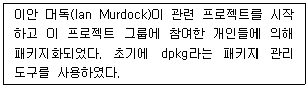
- Debian
- Fedora
- Redhat
- Ubuntu
(정답률: 79%)
4. 다음 설명과 관련된 기술로 가장 알맞은 것은?
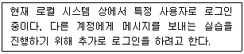
- 스와핑(Swapping)
- 파이프(Pipe)
- 라이브러리(Library)
- 가상 콘솔(Virtual Console)
(정답률: 75%)
5. 다음 설명에 해당하는 클라우드 서비스로 알맞은 것은?
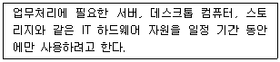
- IaaS
- DaaS
- PaaS
- SaaS
(정답률: 70%)
6. 다음 중 LVM을 구성하는 순서로 알맞은 것은?
- 볼륨그룹 → 물리적 볼륨 → 논리적 볼륨
- 볼륨그룹 → 논리적 볼륨 → 물리적 볼륨
- 물리적 볼륨 → 볼륨그룹 → 논리적 볼륨
- 논리적 볼륨 → 볼륨그룹 → 물리적 볼륨
(정답률: 75%)
7. 다음 중 GRUB의 환경 설정파일에서 'default=1'에 대한 설명으로 알맞은 것은?
- 'title' 항목으로 나타나는 첫 번째 운영체제를 의미한다.
- 'title' 항목으로 나타나는 두 번째 운영체제를 의미한다.
- GRUB 메뉴 화면에서의 대기 시간이 1초임을 의미한다.
- GRUB 메뉴 화면에서의 대기 시간이 10초임을 의미한다.
(정답률: 67%)
8. 다음 설명에 해당하는 내용으로 알맞은 것은?
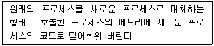
- exec
- fork
- inetd
- standalone
(정답률: 64%)
9. 다음 중 가장 큰 번호 값을 갖는 시그널(signal)로 알맞은 것은?
- SIGTERM
- SIGKILL
- SIGSTOP
- SIGQUIT
(정답률: 54%)
10. 다음 ( 괄호 ) 안에 출력되는 내용으로 알맞은 것은?
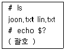
- ?
- 0
- 1
- 2
(정답률: 50%)
11. 다음 중 GNOME 3 버전에서 사용하는 윈도 매니저로 알맞은 것은?
- nautilus
- KWin
- Metacity
- Mutter
(정답률: 58%)
12. 다음 중 포어그라운드 프로세스를 백그라운드 프로세스로 전환할 때 사용하는 키 조합으로 알맞은 것은?
- Ctrl + C
- Ctrl + D
- Ctrl + L
- Ctrl + Z
(정답률: 73%)
13. 명령 1이 성공적으로 수행되면 명령 2가 실행되도록 하려고 한다. 다음 ( 괄호 ) 안에 들어갈 내용으로 알맞은 것은?
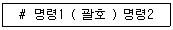
- ;
- |
- ||
- &&
(정답률: 70%)
14. 다음 중 X 클라이언트 프로그램을 다른 원격지의 X 서버로 전송하기 위해 변경해야 할 환경변수로 알맞은 것은?
- TERM
- TERMINAL
- SESSION
- DISPLAY
(정답률: 64%)
15. 다음 중 파일 시스템 점검을 위해 단일 사용자 모드로 전환할 때 사용하는 명령으로 알맞은 것은?
- init 0
- init 1
- init 5
- init 6
(정답률: 72%)
16. DoS공격중 하나인 Ping of Death 공격에 대응하기 위하여 방화벽에서 특정 프로토콜을 차단하는 보안 정책을 적용하려고 한다. 다음 중 차단해야 하는 프로토콜로 알맞은 것은?
- FTP
- ARP
- DNS
- ICMP
(정답률: 74%)
17. 사용 가능한 호스트 수가 126개인 서브 네트워크를 구성하려고 한다. 다음 중 네트워크 접두어 길이 표현방법으로 가장 알맞은 것은?
- /8
- /16
- /24
- /25
(정답률: 68%)
18. 다음 중 프로토콜에 대한 설명으로 틀린 것은?
- ISO, ANSI, ITU-T는 대표적인 프로토콜의 제정 기관이다.
- 프로토콜의 기능으로는 흐름제어, 오류제어, 동기화, 캡슐화 등이 있다.
- 프로토콜은 구문(Syntax), 의미(Semantics), 순서(Timing)으로 구성되어 있다.
- 대표적인 프로토콜인 TCP/IP는 ISO에서 제정하였다.
(정답률: 66%)
19. 다음 중 FTP 서비스에서 사용하는 명령어로 가장 거리가 먼 것은?
- mcd
- mget
- mput
- mdelete
(정답률: 55%)
20. 다음에서 설명하는 것으로 알맞은 것은?
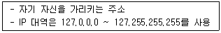
- IP 주소
- 사설 IP 주소
- 루프백 IP 주소
- 멀티캐스트 주소
(정답률: 78%)
2과목: 리눅스 시스템 관리
21. 파일 및 디렉터리를 생성했더니 기본 생성되는 허가권 값이 아래와 같다. 다음 중 umask 명령을 실행했을 때 나타나는 값으로 알맞은 것은?
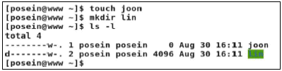
- 0002
- 0644
- 0664
- 0775
(정답률: 68%)
22. /etc/shadow 파일에서 계정 만기일 영역에 해당하는 필드 순서로 알맞은 것은?
- 3번째
- 7번째
- 8번째
- 9번째
(정답률: 50%)
23. 소스 파일을 이용해서 특정 프로그램을 설치할 때 관련 옵션을 확인하려고 한다. 다음 ( 괄호 ) 안에 들어갈 내용으로 알맞은 것은?
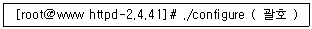
- --option
- --options
- --menu
- --help
(정답률: 60%)
24. 다음 중 명령어의 사용법으로 틀린 것은?
- pgrep httpd
- nice -10 1222
- killall httpd
- renice 1 987 -u daemon root –p 1222
(정답률: 45%)
25. 다음 중 월, 수, 금요일 오전 4시 1분에 실행되는 crontab 설정으로 알맞은 것은?
- 4 1 * * 1,3,5 /etc/lin.sh
- 1 4 * * 1,3,5 /etc/lin.sh
- 4 1 1,3,5 * * /etc/lin.sh
- 1 4 1,3,5 * * /etc/lin.sh
(정답률: 70%)
26. 다음은 lin.txt 파일의 수정 시간(Modify time)을 변경하는 과정이다. ( 괄호 ) 안에 들어갈 명령 으로 알맞은 것은?
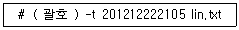
- file
- stat
- chage
- touch
(정답률: 62%)
27. 다음 설명에 해당하는 파일로 알맞은 것은?
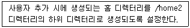
- /etc/skel
- /etc/passwd
- /etc/login.defs
- /etc/default/useradd
(정답률: 55%)
28. 다음 중 joon이라는 아이디를 lin으로 변경하는 명령으로 알맞은 것은?
- usermod -l joon lin
- usermod -l lin joon
- usermod -n joon lin
- usermod -n lin joon
(정답률: 43%)
29. 다음 중 특수 권한인 Set-UID, Set-GID, Sticky Bit가 부여된 파일이나 디렉터리로 틀린 것은?
- /tmp
- /bin/su
- /etc/shadow
- /usr/bin/passwd
(정답률: 40%)
30. 다음은 스왑 파일을 생성하는 단계의 일부이다. ( 괄호 ) 안에 들어갈 명령어로 알맞은 것은?
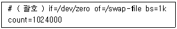
- dd
- mkswap
- swapon
- swapoff
(정답률: 54%)
31. 다음 ( 괄호 ) 안에 들어갈 내용으로 알맞은 것은?
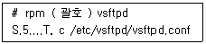
- -q
- -qc
- -qp
- -V
(정답률: 56%)
32. 다음 중 온라인 기반 패키지 관리 기법으로 가장 거리가 먼 것은?
- yum
- yast
- apt-get
- zypper
(정답률: 51%)
33. 다음 중 사용자가 백그라운드로 수행중인 프로세스 정보를 확인할 때 사용하는 명령어로 알맞은 것은?
- fg
- bg
- jobs
- pgrep
(정답률: 68%)
34. 다음 중 프로세스에 할당되는 NI 값의 범위로 알맞은 것은?
- -20 ∼ 20
- -20 ∼ 19
- -19 ∼ 19
- -19 ∼ 20
(정답률: 64%)
35. 다음 중 yum을 이용해서 telnet이라는 문자열이 들어있는 패키지를 전부 찾는 명령으로 알맞은 것은?
- yum info telnet
- yum list telnet
- yum find telnet
- yum search telnet
(정답률: 66%)
36. 다음 ( 괄호 ) 안에 들어갈 수 있는 파일명으로 알맞은 것은?
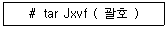
- httpd-2.4.41.tar.bz2
- httpd-2.4.41.tar.Z
- php-5.6.40.tar.xz
- mysql-boost-5.7.27.tar.gz
(정답률: 55%)
37. 다음 중 시그널의 종류와 번호를 확인할 수 있는 명령으로 알맞은 것은?
- kill -l
- signal -l
- killall -l
- ps -l
(정답률: 52%)
38. 다음 중 ihduser 계정이 사용하고 있는 디스크의 총 사용량을 확인하는 명령으로 가장 알맞은 것은?
- du -sh ihduser
- du -sh ~ihduser
- df -sh ihduser
- df -sh ~ihduser
(정답률: 45%)
39. 다음 중 시스템에 로그인된 사용자들의 아이디를 확인하는 명령으로 가장 거리가 먼 것은?
- w
- who
- users
- logname
(정답률: 54%)
40. 다음 중 특정 그룹의 그룹 관리자를 지정할 때 사용하는 명령으로 알맞은 것은?
- grpconv
- newgrp
- gpasswd
- grpck
(정답률: 42%)
41. 다음 중 새롭게 생성된 파티션을 /etc/fstab 파일에 등록하는 형식으로 알맞은 것은?(오류 신고가 접수된 문제입니다. 반드시 정답과 해설을 확인하시기 바랍니다.)
- /dev/sdb1 /home2 ext4 default 1 1
- /dev/sdb1 /home2 ext4 defaults 1 1
- /home2 /dev/sdb1 ext4 default 1 1
- /home2 /dev/sdb1 ext4 defaults 1 1
(정답률: 52%)
42. lin.txt라는 문서를 lp라는 이름을 가진 프린터로 2장 출력하는 과정이다. 다음 ( 괄호 ) 안에 들어갈 명령으로 알맞은 것은?
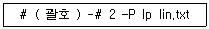
- lp
- lpr
- lpq
- lpc
(정답률: 57%)
43. 다음은 e1000이라는 모듈을 제거하는 과정이다. ( 괄호 ) 안에 들어갈 내용으로 알맞은 것은?
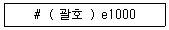
- insmod
- rmmod
- depmod
- modprobe
(정답률: 69%)
44. 다음 설명에 해당하는 것은?
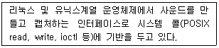
- OSS
- CUPS
- SANE
- ALSA
(정답률: 50%)
45. 다음 중 시스템에서 사용 가능한 모듈이 저장되어 있는 디렉터리로 알맞은 것은?
- /lib/커널버전/modules/kernel
- /lib/modules/커널버전/kernel
- /lib/modules/kernel/커널버전
- /lib/커널버전/kernel/modules
(정답률: 62%)
46. 다음 형식과 관련된 파일로 알맞은 것은?
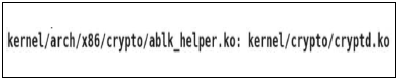
- modprobe.conf
- modules.conf
- modules.dep
- modprobe.dep
(정답률: 47%)
47. 다음 설명에 해당하는 것은?
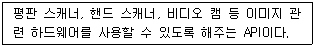
- OSS
- CUPS
- SANE
- ALSA
(정답률: 65%)
48. 다음 중 System V 계열에 속하는 프린터 관련 명령어로 틀린 것은?
- lp
- lpr
- lpstat
- cancel
(정답률: 57%)
49. 다음 중 모듈 간의 의존성이 기록된 파일의 정보를 갱신할 때 사용하는 명령으로 알맞은 것은?
- insmod
- depmod
- modinfo
- modprobe
(정답률: 51%)
50. 다음 설명에 해당하는 커널 컴파일 도구로 알맞은 것은?
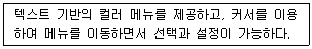
- make config
- make xconfig
- make gconfig
- make menuconfig
(정답률: 56%)
51. 다음 중 rsync의 특징으로 가장 거리가 먼 것은?
- 레벨을 지정하여 증분 백업이 가능하며, 하드 링크 복사가 가능하다.
- 기본적으로 ssh나 rsh를 이용하여 전송하며, 다른 프로토콜 접속을 지원한다.
- 이전에 받은 백업본을 삭제하고, 원본과 항상 똑같이 백업이 되도록 설정이 가능하다.
- 데이터를 압축하여 전송이 가능하며 심볼릭 링크나, 심볼릭 링크가 참고하고 있는 파일도 복사가 가능하다.
(정답률: 37%)
52. 다음 중 ( 괄호 ) 안에 들어갈 내용으로 알맞은 것은?
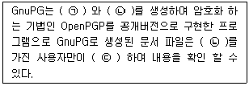
- ㉠ : 공개키 ㉡ : 비밀키 ㉢ : 복호화
- ㉠ : 비밀키 ㉡ : 개인키 ㉢ : 복호화
- ㉠ : 공개키 ㉡ : 개인키 ㉢ : 리스토어
- ㉠ : 비밀키 ㉡ : 특수키 ㉢ : 리스토어
(정답률: 60%)
53. ssh 명령을 사용하여 다른 시스템에 패스워드 없이 바로 로그인이 가능하도록 설정하려고 한다. 다음 중 괄호 안에 들어갈 내용으로 알맞은 것은?
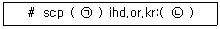
- ㉠ : ./ssh/id_rsa ㉡ : ./ssh/authorized_keys
- ㉠ : ./ssh/authorized_keys ㉡ : ./ssh/id_rsa
- ㉠ : ./ssh/id_rsa.pub ㉡ : ./ssh/authorized_keys
- ㉠ : ./ssh/authorized_keys ㉡ : ./ssh/id_rsa.pub
(정답률: 41%)
54. 다음에서 설명하는 백업 명령어로 알맞은 것은?
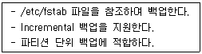
- tar
- cpio
- dump
- restore
(정답률: 52%)
55. 다음 중 SELinux를 설정하는 방법으로 틀린 것은?
- getenforce 명령어를 이용한 수정
- setenforce 명령어를 이용한 수정
- vi 편집기를 이용해 /etc/selinux/config 수정
- system-config-window 도구를 이용한 x-window 환경에서 수정
(정답률: 41%)
56. 다음과 같이 접속하려고 한다. ssh 서버에서 변경하는 설정 파일로 알맞은 것은?
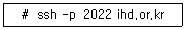
- /etc/rc.d/init.d/sshd
- /etc/ssh/sshd_config
- ./ssh/authorized_keys
- /usr/libexec/openssh/sftp-server
(정답률: 52%)
57. 로그 로테이트 설정 시 허가권은 0755, 소유자는 system, 소유그룹은 admin 으로 설정하려고 한다. 다음 중 ( 괄호 )안에 들어갈 내용으로 알맞은 것은?
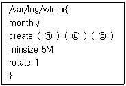
- ㉠ : system ㉡ : admin ㉢ : 0755
- ㉠ : admin ㉡ : system ㉢ : 0755
- ㉠ : 0755 ㉡ : system ㉢ : admin
- ㉠ : 0755 ㉡ : admin ㉢ : system
(정답률: 56%)
58. 다음 설명에 알맞은 것은?
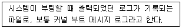
- /var/log/secure
- /var/log/dmesg
- /var/log/lastlog
- /var/log/wtmp
(정답률: 63%)
59. 모든 emerg 수준의 문제가 발생되면 /log/emerg.log 파일에 기록하는 설정을 하려고 한다. 다음 중 ( 괄호 ) 안에 들어갈 내용으로 알맞은 것은?
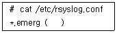
- /log/emerg.log
- */log/emerg.log
- +/log/emerg.log
- @/log/emerg.log
(정답률: 49%)
60. 다음 중 rsyslog로 생성되는 로그의 저장 위치로 알맞은 것은?
- /log
- /var/log
- /usr/log
- /etc/rsyslog/log
(정답률: 55%)
3과목: 네트워크 및 서비스의 활용
61. /etc/named.conf 파일 설정의 일부가 다음과 같을 때 관련 설명으로 가장 알맞은 것은?
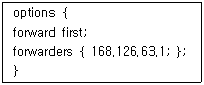
- 해당 서버로 들어온 질의를 무조건 168.126.63.1로 넘기고 처리 여부는 무시한다.
- 해당 서버로 들어온 질의를 일단 처리하고, 처리하기 힘든 경우에 168.126.63.1으로 넘긴다.
- 해당 서버로 들어온 질의를 168.126.63.1로 넘기고 응답이 없을 경우에 해당 서버에서 처리한다.
- 해당 서버로 들어온 질의를 168.126.63.1로 넘기고 응답이 없을 경우에 해당 서버도 응답하지 않는다.
(정답률: 52%)
62. 다음 중 전가상화(Bare-Metal/Hypervisor) 기법을 이용하는 제품으로 알맞은 것은?
- Citrix의 XenServer
- VMware의 ESX Server
- Oracle의 VirtualBox
- Microsoft의 Virtual Server
(정답률: 39%)
63. 다음 중 이름과 성의 조합을 나타내는 LDAP의 속성 관련 키워드로 알맞은 것은?
- c
- cn
- sn
- dc
(정답률: 62%)
64. 다음 중 192.168.5.0 네트워크 대역에 속한 호스트 들만 /nfsdata 디렉터리에 접근 가능하도록 설정할 때, ( 괄호 ) 안에 들어갈 내용으로 알맞은 것은?
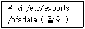
- 192.168.5
- 192.168.5.0
- 192.168.5.0/24
- 192.168.5/255.255.255.0
(정답률: 56%)
65. 다음 ( 괄호 ) 안에 들어갈 내용으로 알맞은 것은?
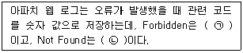
- ㉠ 401, ㉡ 403
- ㉠ 401, ㉡ 404
- ㉠ 403, ㉡ 404
- ㉠ 404, ㉡ 403
(정답률: 62%)
66. 다음 중 아파치 웹 서버의 다중처리모듈(MPM : Multi-Process Module) 관련 정보를 확인하는 명령으로 알맞은 것은?
- httpd -l
- httpd -t
- httpd -f
- httpd -S
(정답률: 50%)
67. 다음 설명에 해당하는 아파치 웹 서버의 다중처리모듈(MPM : Multi-Process Module)로 알맞은 것은?
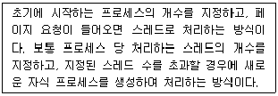
- beos
- prefork
- worker
- perchild
(정답률: 48%)
68. 다음 중 NIS(Network Information Service)와 가장 거리가 먼 것은?
- Yellow Pages
- X.500
- RPC
- Sun Microsystems
(정답률: 45%)
69. 다음 결과에 해당하는 명령으로 알맞은 것은?
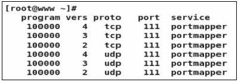
- rpcinfo
- portmap
- exportfs
- rpcbind
(정답률: 39%)
70. 다음 ( 괄호 ) 안에 들어갈 파일명으로 알맞은 것은?
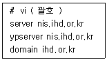
- /etc/hosts
- /etc/yp.conf
- /etc/ypserv.conf
- /etc/sysconfig/network
(정답률: 44%)
71. 삼바 서버의 환경 설정 파일에서 ihduser와 kaituser만 접근할 수 있도록 설정하려고 한다. 다음 ( 괄호 ) 안에 들어갈 내용으로 알맞은 것은?
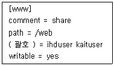
- users
- smbusers
- valid users
- public users
(정답률: 55%)
72. 다음 설명에 해당하는 프로그램으로 알맞은 것은?
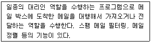
- dovecot
- postfix
- procmail
- sendmail
(정답률: 39%)
73. 다음은 정보 파일의 내용을 수정하는 과정이다. ( 괄호 ) 안에 들어갈 수 있는 명령의 형식으로 알맞은 것은?
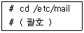
- m4 virtusertable ＞ virtusertable
- m4 virtusertable ＜ virtusertable
- makemap hash virtusertable ＞ virtusertable
- makemap hash virtusertable ＜ virtusertable
(정답률: 34%)
74. 다음은 /etc/named.conf 파일 설정의 일부이다. 네임 서버에 질의할 수 있는 호스트를 지정 하려고 할 때 ( 괄호 ) 안에 들어갈 내용으로 알맞은 것은?
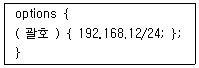
- acl
- allow-transfer
- allow-hosts
- allow-query
(정답률: 46%)
75. 다음은 zone 파일을 지정하는 과정이다. 도메인이 ihd.or.kr이고, zone 파일명을 ihd.zone으로 지정할 때 ( 괄호 ) 안에 들어갈 내용으로 알맞은 것은?
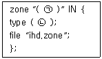
- ㉠ ihd.or.kr, ㉡ hint
- ㉠ ihd.or.kr, ㉡ master
- ㉠ ihd.or.kr., ㉡ hint
- ㉠ ihd.or.kr., ㉡ master
(정답률: 36%)
76. 다음은 zone 파일 설정의 일부이다. ( 괄호 ) 안에 들어갈 내용으로 알맞은 것은?
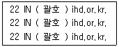
- A
- MX
- PTR
- CNAME
(정답률: 38%)
77. 다음은 zone 파일을 지정하는 과정이다. ( 괄호 ) 안에 들어갈 내용으로 알맞은 것은?
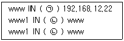
- ㉠ A, ㉡ CNAME
- ㉠ CNAME, ㉡ A
- ㉠ A, ㉡ NS
- ㉠ NS, ㉡ CNAME
(정답률: 55%)
78. 다음 설명에 해당하는 가상화의 효과로 알맞은 것은?
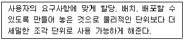
- 단일화(Aggregation)
- 에뮬레이션(Emulation)
- 절연(Insulation)
- 프로비저닝(Provisioning)
(정답률: 55%)
79. Xen 기반의 가상 머신을 생성하기 위해 관련 데몬을 실행하려고 한다. 다음 ( 괄호 ) 안에 들어갈 내용으로 알맞은 것은?
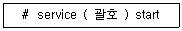
- xend
- libvirtd
- virt-top
- virt-manager
(정답률: 47%)
80. 다음 중 xinetd 기반으로 동작하는 텔넷 서비스를 중단하기 위한 관련 설정 항목과 값으로 알맞은 것은?
- enable = no
- enable = yes
- disable = no
- disable = yes
(정답률: 51%)
81. 다음은 squid.conf 파일의 일부이다. ( 괄호 ) 안에 들어갈 내용으로 알맞은 것은?
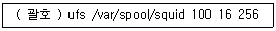
- acl_dir
- spool_dir
- cache_dir
- coredump_dir
(정답률: 43%)
82. 다음은 dhcpd.conf 파일의 일부이다. ( 괄호 ) 안에 들어갈 내용으로 알맞은 것은?
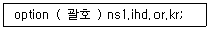
- dns-servers
- name-servers
- domain-name
- domain-name-servers
(정답률: 39%)
83. 다음 중 아파치 웹 서버의 환경 설정 파일에서 일반 사용자의 웹 문서가 위치하는 디렉터리를 변경할 때 사용하는 항목으로 알맞은 것은?
- HomeDir
- UserDir
- PublicDir
- HtmlDir
(정답률: 51%)
84. 다음 중 SQL 기반의 관계형 데이터베이스로 거리가 먼 것은?
- MongoDB
- MariaDB
- Oracle
- PostgreSQL
(정답률: 54%)
85. 다음 중 CentOS 6 버전에서 RPC 서비스를 사용하기 위해 동작시켜야할 데몬명으로 알맞은 것은?
- portmap
- rpcbind
- ypbind
- ypserv
(정답률: 54%)
86. 다음 그림에 해당하는 명령으로 알맞은 것은?
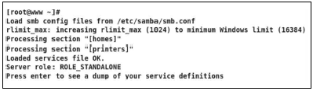
- smbstatus
- testparm
- smbclient
- nmblookup
(정답률: 33%)
87. 다음은 NFS 서버에 익스포트된 정보를 확인하는 과정이다. ( 괄호 ) 안에 들어갈 명령으로 알맞은 것은?
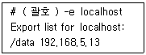
- exportfs
- showmount
- rpcinfo
- nfsstat
(정답률: 49%)
88. 다음 중 vsftpd.conf에서 TCP wrappers를 이용한 접근 제어가 가능하도록 지정하는 설정으로 알맞은 것은?
- tcp_wrappers=OK
- tcp_wrappers=ON
- tcp_wrappers=OFF
- tcp_wrappers=YES
(정답률: 48%)
89. 다음 ( 괄호 ) 안에 들어갈 내용으로 알맞은 것은?
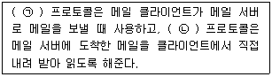
- ㉠ POP3, ㉡ IMAP
- ㉠ IMAP, ㉡ POP3
- ㉠ SMTP, ㉡ POP3
- ㉠ POP3, ㉡ SMTP
(정답률: 54%)
90. 다음 설정에 해당하는 파일명으로 알맞은 것은?
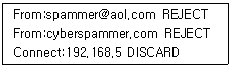
- /etc/aliases
- /etc/mail/access
- /etc/mail/sendmail.cf
- /etc/mail/local-host-names
(정답률: 49%)
91. 다음 형식으로 설정하는 파일명으로 알맞은 것은?
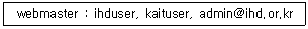
- /etc/aliases
- /etc/mail/access
- /etc/mail/virtusertable
- /etc/mail/local-host-names
(정답률: 36%)
92. 다음 DNS 서버를 운영하기 위해 설치해야 할 프로그램으로 알맞은 것은?
- bind
- ypbind
- dnsserver
- nameserver
(정답률: 43%)
93. 다음 설명에 해당하는 가상화 기술로 알맞은 것은?
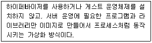
- Openstack
- RHEV
- Docker
- VirtualBox
(정답률: 59%)
94. 다음 그림에 해당하는 명령으로 알맞은 것은?
- virsh
- libvirtd
- virt-top
- virt-manager
(정답률: 60%)
95. 다음 설명에 해당하는 네트워크 서비스로 알맞은 것은?
- VNC
- NTP
- DHCP
- PROXY
(정답률: 62%)
96. 다음 설명에 해당하는 보안 도구로 알맞은 것은?
- fail2ban
- Suricata
- sshguard
- DenyHosts
(정답률: 39%)
97. 다음 중 INPUT 사슬에 설정된 두 번째 정책을 제거하는 명령으로 알맞은 것은?
- iptables -D INPUT 2
- iptables -F INPUT 2
- iptables -P INPUT 2
- iptables -R INPUT 2
(정답률: 43%)
98. 다음 ( 괄호 ) 안에 들어갈 내용으로 알맞은 것은?
- ㉠ NAT, ㉡ PREROUTING
- ㉠ NAT, ㉡ POSTROUTING
- ㉠ Filter, ㉡ PREROUTING
- ㉠ Filter, ㉡ POSTROUTING
(정답률: 49%)
99. 다음 설명에 해당하는 공격 유형으로 가장 알맞은 것은?
- Brute Force
- Land Attack
- DDoS Attack
- TCP SYN Flooding
(정답률: 55%)
100. 다음 설명에 해당하는 공격 유형으로 알맞은 것은?
- SYN Flooding
- UDP Flooding
- ICMP Flooding
- Teardrop Attack
(정답률: 48%)
이유: GPL, LGPL, MPL은 모두 "강제 공개"를 요구하는 저작권 조건을 가지고 있지만, BSD는 "강제 공개"를 요구하지 않습니다. BSD는 소스 코드를 수정하고 재배포하는 것을 허용하며, 이를 상업적으로 이용하는 것도 허용합니다. 따라서, BSD 라이선스를 사용하는 소프트웨어는 소스 코드를 공개하지 않아도 됩니다.